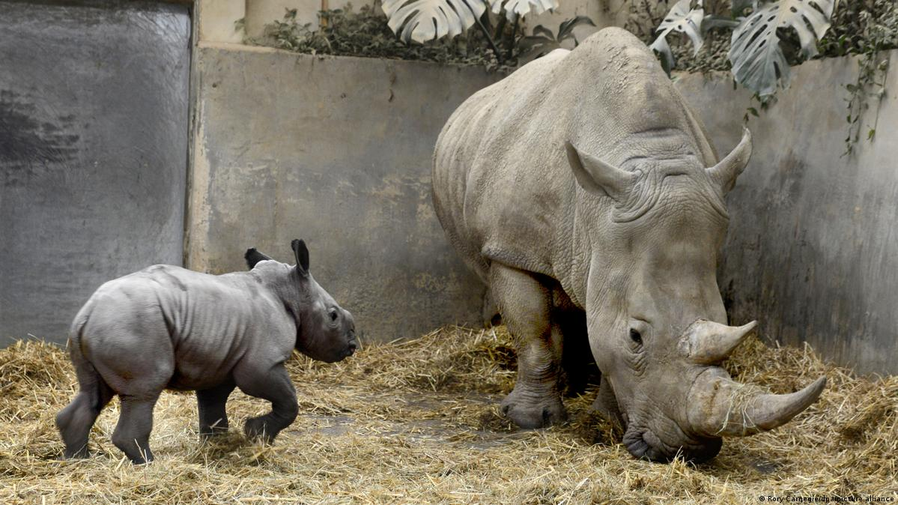

My Homepage
Rhinos are a rare species Rhinos are thought to be the second largest land animal, with the elephant being the largest.
They have a robust, cylindrical body with a large head, relatively short legs, and short tail.
The characteristic feature of these animals is a large horn in the middle of their faces; some species have a second, smaller horn.
See about rare rhino birth

Rhinos are usually grey, black, or brown (though one species is called the “white rhino”), and average about 1.5 tons (1360 kg) in weight.
The two rhino species of Africa are much larger than the three species found in Asia.
see about white rhinos here